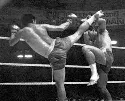
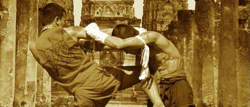

Mi is az a Thai box?
A thai boksz, eredeti nevén muaj thai (thai nyelven มวยไทย, angol átírással Muay Thai) Thaiföldről származó pusztakezes harcművészet. Eredetileg mindenfajta felszerelés nélkül művelték, ma a sportolók egységesített szabályok szerint, ökölvívó kesztyűben és védőfelszerelésben küzdenek, de léteznek úgynevezett hagyományos thaiboksz-mérkőzések is, ahol a védőfelszerelést elhagyják. A thai bokszot a „nyolc végtag tudományának” is nevezik, mivel a küzdelem során a bokszoló nem csak az ökleit, de a lábát, a térdét és a könyökét is használhatja. Világszerte több szervezet is rendez világbajnokságokat, több súlycsoportban, férfi és női kategóriában egyaránt. 2021-ben a Nemzetközi Olimpiai Bizottság teljes jogú olimpiai sportként ismerte el.
Története
A muaj thai története szorosan kapcsolódik a thai nép történetéhez, de eredetét és fejlődését jórészt legendákból lehet csak megismerni. Egyes elméletek szerint a thai boksz több mint kétezer éves, de csupán 700 évre visszamenőleg találni dokumentációt róla. A legkorábbi említésére példa a 13. században található, ahol az első thai királyság királyi palotájában már volt külön muaj thai gyakorlására kijelölt terület és küzdőtér is, ahol mérkőzéseket tartottak. A thaiok korai történelmében gyakori háborúk miatt a muaj thai kezdetektől fogva a hadsereg kiképzésében is szerepet játszott. Maguk a királyok is szívesen tanulták ezt a harcművészetet, egy legenda szerint Suriyenthrathibodi (สมเด็จพระสุริเยนทราธิบดี, más néven a Tigriskirály; 1703–1709) olyannyira szerette a muaj thait, hogy gyakorlásképpen álruhában közemberekkel is ringbe szállt. Ekkor élte a thai boksz a fénykorát is.
Harcmodor
A muaj thai több tekintetben különbözik a karatétól és a kungfutól; a rúgásokat és ütéseket teljes erőből viszik be, nem fogják vissza őket. Fénykorának idején, a Tigris király uralkodása alatt súlycsoportok, és szabályok nélküli, szabad küzdelemről volt szó. Csupasz lábakkal harcoltak, az alkarokat néha kenderrel tekerték körbe. Amennyiben mindkét harcos beleegyezett, a kezükre törött üveget erősítettek. A harcosok még ma is mezítláb küzdenek, bokagumit viselve lábukon és ökölvívó kesztyűt a kezükön. Manapság is nagy népszerűsége van az úgynevezett bandázs harcnak. Ekkor a harcosok nem viselnek kesztyűt, csak bandázst a kezükön. A formagyakorlatok, „katák” mára már eltűntek a gyakorlás repertoárjából. A koncentrációt, az erőt, a reflexeket, az időzítést állandó küzdőgyakorlatokkal fejlesztik. Ezen kívül rúgó és ütőzsákokon gyakorolnak. A szükségtelen sérülések elkerülése érdekében az edzéseken védőfelszerelésben gyakorolnak. A zene, a tradicionális tánc (vai khru és ram muaj), amit a mérkőzések előtt, valamint a mérkőzések alatt játszanak, speciális vonzerőt és megkülönböztetést kölcsönöz a muaj thainak. A küzdelmet ritmikusan követő zenekarban dob, pengetős és jávai fúvós hangszer szerepel. A harc előtti rituálé a vai khru (tisztelet a mesternek). Ezután a harcos eltáncolja a ram muajt. Ezáltal a harcos megtisztítja a szívét a félelemtől, és felkészül a küzdelemre. Közvetlenül a mérkőzés megkezdése előtt veszik le a mongkont, azt a fejpántot, amit a rituálé alatt a fejük köré tekerve viselnek, ami a hagyományos viselet része. A mongkon állítólag az ősi időkben rongyba tekert imatekercsekből állt, amit olyan szorosan tekertek a fejre, az a küzdelmek alatt sem jött le. A harcosok úgy tartották, hogy ez megvédi őket a szerencsétlen sérülésektől.